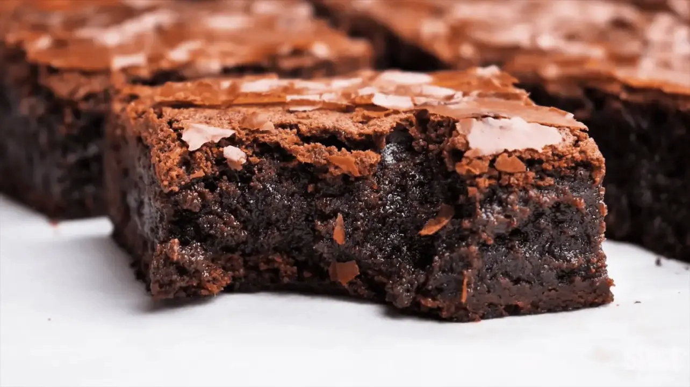

Fudgy Chocolate Brownies

A plate of rich, fudgy chocolate brownies with a glossy, crackly top. These decadent treats are perfectly chewy and chocolatey, ideal for satisfying your sweet tooth.
Brownie Ingredients
- Unsalted Butter
- Semi-Sweet Chocolate Chips
- Granulated Sugar
- Brown Sugar
- Eggs
- Vanilla Extract
- Cocoa Powder
- All-Purpose Flour
- Salt
Steps
To make fudgy chocolate brownies, follow these concise steps:
- Melt Butter and Chocolate: In a microwave-safe bowl, melt ½ cup (115g) unsalted butter and 1 cup (175g) semi-sweet chocolate chips together. Stir until smooth.
- Mix Sugars: Add 1 cup (200g) granulated sugar and ½ cup (100g) brown sugar to the melted chocolate mixture. Mix well.
- Add Eggs and Vanilla: Whisk in 3 large eggs and 1 teaspoon vanilla extract until smooth and glossy.
- Sift Dry Ingredients: In a separate bowl, sift together ½ cup (65g) all-purpose flour, ¼ cup (30g) cocoa powder, and ½ teaspoon salt.
- Combine Wet and Dry Ingredients: Gradually fold the dry ingredients into the wet mixture until just combined. Avoid overmixing.
- Preheat Oven: Preheat the oven to 350°F (175°C). Line an 8x8-inch (20x20 cm) baking pan with parchment paper.
- Pour Batter: Pour the batter into the prepared pan and spread it evenly.
- Bake: Bake for 25–30 minutes or until a toothpick inserted into the center comes out with a few moist crumbs.
- Cool: Allow the brownies to cool completely in the pan before slicing.
Once cooled, slice into squares, serve, and enjoy your fudgy chocolate brownies!